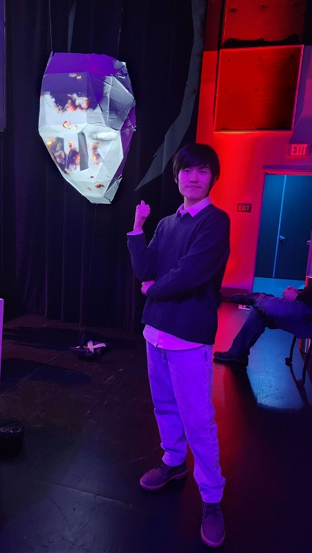

About Weikun Shen

Digital Media Artist, Weikun Shen, mainly works on conceptual art, while practicing his skills in Photoshop, After Effects, Premier, and Blender at the same time. Coming from another country with a totally different system, the different identity allows Weikun to observe the world around him with diverse perspectives. While most of Weikun’s works focus on the pure conceptual art, others mainly show the audience the idea of cultural adaptation.
Weikun Shen prefers to show his personal opinions in the work. He believes that all the controversy comes from misunderstanding, which can only be solved by people talking to each other without hatred and discrimination. So his work is also filled with Idealism and romanticism.
Art of Shen
When you try to define art and find a standard to evaluate art, you will find that art is often broad and abstract. But maybe you can try to define an artist. Idealism focuses on facts, pessimism wants to be optimistic, a divisive mind. This is my assessment of myself. I enjoy exploring the depths of people's personalities and am good at looking into my own soul. But at the same time, I also appreciate the simplest, superficial art. Because of this, my work is also divided and pluralistic.
As a digital media artist working with tools such as Photoshop, Blender, Premier, and P5.js, I am constantly exploring the possibilities of technology and its ability to create new forms of art. My work is deeply influenced by my cultural background as someone from China living in the United States, and I seek to integrate traditional art forms with modern technology in a way that reflects my unique experiences and perspectives.
One of the main themes that runs through my work is the idea of cultural adaptation. As someone who has moved to a new country and experienced the challenges of adapting to a new culture, I am fascinated by the ways in which culture can shape our identities and influence the way we see the world. Through my art, I explore the complexities of cultural identity and the ways in which different cultures can blend and influence one another.
Another theme that I am interested in is the relationship between simplicity and depth. I believe that art should be accessible and enjoyable for everyone, regardless of their background or level of expertise. At the same time, I also strive to create work that is layered and complex, with multiple meanings and interpretations. By blending simple forms with deep ideas, I hope to create art that is both approachable and thought-provoking.
In terms of technique, I enjoy working with a variety of tools and mediums. While digital media is my primary focus, I also appreciate traditional art forms such as hand drawing and painting. I find that these mediums can often inform my digital work, allowing me to bring a unique perspective and style to my digital pieces.
In terms of my creative process, I tend to approach my work with a sense of playfulness and experimentation. I believe that the best ideas often come from a place of curiosity and exploration, and I am constantly trying out new techniques and approaches to see what works and what doesn't. At the same time, I am also deeply committed to the idea of intentionality, and I always strive to create work that is meaningful and purposeful.
Ultimately, my goal as an artist is to create work that is both visually striking and emotionally resonant. By blending traditional and modern elements, exploring themes of cultural adaptation and identity, and approaching my work with a sense of playfulness and intentionality, I hope to create a body of work that is both personal and universal, reflecting my own experiences while also speaking to broader human themes.